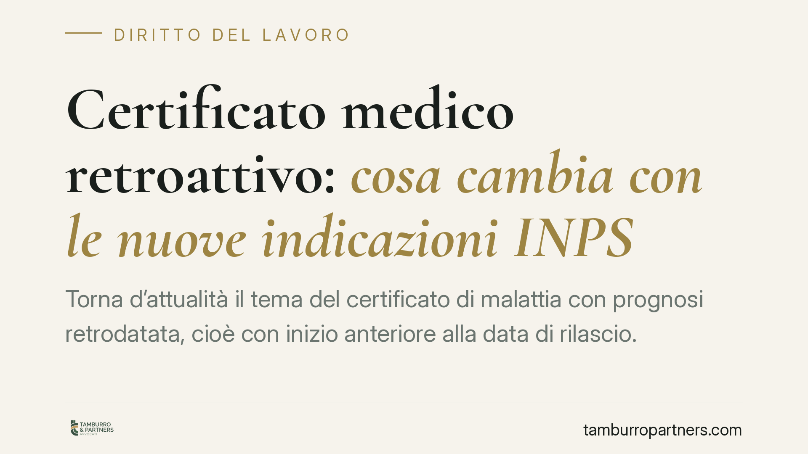

Certificato medico retroattivo: cosa cambia con le nuove indicazioni INPS
Torna d'attualità il tema del certificato di malattia con prognosi retrodatata, cioè con inizio anteriore alla data di rilascio. Una circolare INPS attesa in questa materia interverrebbe sui limiti di ammissibilità. Il punto tocca due piani distinti: il diritto all'indennità previdenziale e la giustificazione dell'assenza sul piano disciplinare. Vediamo cosa sappiamo e come muoversi con prudenza.

Il tema: certificato retroattivo e data di inizio prognosi
Ogni certificato di malattia telematico riporta due date diverse che è essenziale non confondere.
La data di rilascio è il giorno in cui il medico redige e trasmette il certificato. La data di inizio prognosi è invece il giorno da cui, secondo la valutazione clinica, ha avuto inizio lo stato di incapacità al lavoro.
Quando la seconda precede la prima si parla di certificato retroattivo (o retrodatato): il medico attesta che la malattia era già in corso in un giorno anteriore alla visita. È un'ipotesi frequente, ad esempio quando il lavoratore si rivolge al medico solo dopo l'inizio dei sintomi.
Sul tema è segnalata una nuova presa di posizione dell'INPS. Al momento non risulta confermato in modo puntuale il numero e la data esatta della circolare che la stampa specializzata indica come intervento in materia (indicata come circolare n. 92/2026): il riferimento va quindi trattato con cautela e verificato sui canali ufficiali INPS prima di ogni scelta operativa. Ragioniamo perciò sui principi consolidati, che restano il riferimento più affidabile.
Inquadramento normativo e prassi
La trasmissione telematica del certificato è disciplinata, per il pubblico impiego, dall'art. 55-septies del D.Lgs. 165/2001. Per il settore privato l'obbligo di invio telematico del certificato da parte del medico e di messa a disposizione del datore tramite INPS deriva da distinte disposizioni (in particolare l'art. 25 della L. 183/2010 e i successivi decreti attuativi). È bene tenere distinti i due binari: il regime telematico è oggi generalizzato, ma la fonte normativa non è la stessa per pubblico e privato.
Sul certificato retroattivo la prassi INPS consolidata ha storicamente ammesso una tolleranza limitata: la retrodatazione è di norma riconosciuta ai fini indennitari per un solo giorno rispetto alla data della visita, salvo che il medico documenti in modo specifico le ragioni cliniche di una decorrenza anteriore. Oltre tale soglia il rischio è che l'INPS non riconosca l'indennità per i giorni retrodatati non giustificati.
Un'eventuale nuova circolare interverrebbe proprio su questi limiti. Fino a quando il testo non è verificabile, il parametro operativo resta la prassi appena descritta.
Due piani da non confondere: previdenziale e disciplinare
Qui sta il punto più delicato.
Il profilo previdenziale riguarda il diritto all'indennità di malattia a carico INPS. Se la retrodatazione non è riconosciuta, il lavoratore rischia di non percepire l'indennità per i giorni contestati.
Il profilo disciplinare riguarda invece il rapporto con il datore di lavoro: se l'assenza in quei giorni non risulta coperta da un certificato valido, essa può essere trattata come assenza ingiustificata, con le conseguenze disciplinari previste dal contratto collettivo.
I due piani possono divergere: un certificato può essere considerato tardivo ai fini indennitari e comunque rilevare, o meno, sul piano della giustificazione dell'assenza. Vanno valutati separatamente.
Il ruolo della visita fiscale
La retrodatazione non incide solo sulla carta. Nei giorni indicati come già malattia, il lavoratore è comunque tenuto al rispetto delle fasce di reperibilità per la visita fiscale di controllo. L'esito della visita fiscale può confermare o mettere in discussione lo stato di malattia, con effetti sia sull'indennità sia sulla posizione disciplinare.
Cosa fare in concreto
Per il lavoratore:
- Rivolgiti al medico tempestivamente, così da ridurre lo scarto tra inizio dei sintomi e rilascio del certificato.
- Verifica subito le due date sul certificato: rilascio e inizio prognosi. Segnala eventuali incongruenze al medico.
- Rispetta le fasce di reperibilità anche per i giorni retrodatati.
Per il datore di lavoro:
- Distingui il profilo indennitario da quello disciplinare prima di adottare qualsiasi provvedimento: il mancato riconoscimento INPS non equivale automaticamente a giustificazione mancante.
- Conserva evidenza delle date e verifica la fonte ufficiale prima di applicare eventuali novità di prassi.
È opportuno, in ogni caso, trattare la tempestività del certificato con la massima attenzione, poiché è il fattore che più incide su entrambi i piani.
Disclaimer
Contributo informativo a cura di Tamburro & Partners - Avv. Giuseppe Tamburro. Non costituisce parere legale.
Ogni storia di lavoro ha i suoi tempi.
Se gestisci HR e vuoi un confronto su contenzioso, ispezioni o licenziamenti, scrivi allo studio. Ti rispondiamo entro un giorno lavorativo.